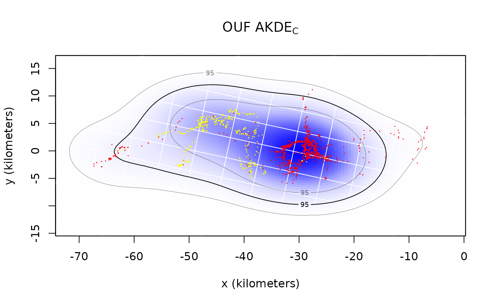
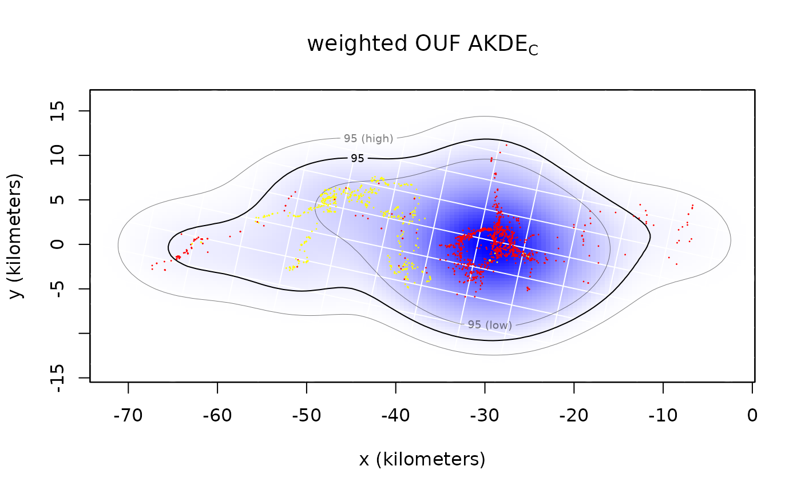

vignettes/akde.Rmd
akde.RmdIn this vignette we walk through autocorrelated kernel density estimation. We will assume that you have already estimated a good ctmm movement model for your data. For demonstration purposes we will be working from the results of the “Variograms and Model Selection” vignette (see vignette("variogram")). Here we will use the buffalo “Pepper” instead of “Cilla”, because Pepper has a GPS collar malfunction that can be mitigated with optimal weighting.
## The legacy packages maptools, rgdal, and rgeos, underpinning the sp package,
## which was just loaded, will retire in October 2023.
## Please refer to R-spatial evolution reports for details, especially
## https://r-spatial.org/r/2023/05/15/evolution4.html.
## It may be desirable to make the sf package available;
## package maintainers should consider adding sf to Suggests:.
## The sp package is now running under evolution status 2
## (status 2 uses the sf package in place of rgdal)
data(buffalo)
Pepper <- buffalo$Pepper
M.IID <- ctmm.fit(Pepper) # no autocorrelation timescales
GUESS <- ctmm.guess(Pepper,interactive=FALSE) # automated model guess
M.OUF <- ctmm.fit(Pepper,GUESS) # in general, use ctmm.select insteadM.IID is the innapropriate, IID model, which will result in a conventional kernel-density estimate, while M.OUF is the superior, continuous-velocity OUF model. Note that you want the best model for each individual, even if that differs by individual. Different movement behaviors and sampling schedules will reveal different autocorrelation structures in the data.
Now we can calculate a uniformly weighted akde object for each model.
## Default grid size of 3 minutes chosen for bandwidth(...,fast=TRUE).
wAKDE <- akde(Pepper,M.OUF,weights=TRUE) # weighted AKDE## Default grid size of 3 minutes chosen for bandwidth(...,fast=TRUE).
However, Pepper’s sampling schedule is anything but uniform.
Keeping in mind that Pepper’s home-range crossing timescale is two weeks, we have several algorithms for calculating optimal weights here. The exact algorithm is the easiest to implement, but it can be prohibitively slow on larger datasets (10k-100k). On the other hand, the fast algorithm can scale to extremely large datasets, but requires an appropriate discrete-time grid dt argument, which should be a divisor of the most frequent sampling intervals that can approximate the smallest sampling intervals. The default will try to intelligently choose among these methods, and the above plot depicts the selected dt in red. Large volumes of data (>100k) collected over a long period of time with finely sampled bursts (period/interval \(\gg\) millions) will not work well with either of the default algorithms. In this case, the user needs to thin their data if optimal weights are required. There is no significant home-range information lost by doing so in such extreme cases.
Now let us plot the results.
# calculate one extent for all UDs
EXT <- extent(list(KDE,AKDE,wAKDE),level=0.95)
plot(Pepper,UD=KDE,xlim=EXT$x,ylim=EXT$y)
title(expression("IID KDE"["C"]))
plot(Pepper,UD=AKDE,xlim=EXT$x,ylim=EXT$y)
title(expression("OUF AKDE"["C"]))
plot(Pepper,UD=wAKDE,xlim=EXT$x,ylim=EXT$y)
title(expression("weighted OUF AKDE"["C"]))## DOP values missing. Assuming DOP=1.
## DOP values missing. Assuming DOP=1.
## DOP values missing. Assuming DOP=1.
By default both the density function and its 95% contours are plotted along with the location data. The middle contour represent the maximum likelihood area where the animal spends 95% of its time. This percentage can be changed with the level.UD option (see help(plot.telemetry)). The inner and outer contours correspond to confidence intervals on the magnitude of the area, which can be adjusted with the level option.
The optimal bandwidth determines the “resolution” of the kernel density estimate. By default we plot grid lines with dimensions matching the standard deviations of the individual kernels. This gives a rough guideline as to what spatial details are and are not important in the density estimate. One can see that the IID KDEC estimate fits tightly to the data and reports many significant details in the buffalo’s home range. The autocorrelated estimates predict future space use more accurately, based on the diffusion model, and yield a more honest account of their uncertainties.
In the case of Pepper, the GPS collar malfunctioned during data collection and the sampling interval mysteriously changed from 1 hour (yellow) to 2 hours (red). This irregularity makes Pepper a good candidate for optimally weighted AKDE (weights=TRUE). The optimally weighted estimate features smaller error, finer resolution, and mitigation of sampling bias. You can see that the uniformly weighted estimates place excessive emphasis on the oversampled data (yellow).
Finally, we can compare the area estimates and effective sample sizes.
summary(KDE)## $DOF
## area bandwidth
## 1724.000 1723.906
##
## $CI
## low est high
## area (square kilometers) 436.7497 458.1221 479.998
##
## attr(,"class")
## [1] "area"
summary(wAKDE)## $DOF
## area bandwidth
## 15.65770 28.16612
##
## $CI
## low est high
## area (square kilometers) 432.2446 761.4926 1182.435
##
## attr(,"class")
## [1] "area"